Actual app renders. Left: published R82; right: corrected R83. Same camera, lighting and diagnostic zoom. Initial guard views match the reported pose. Later frames show dynamic regression coverage.
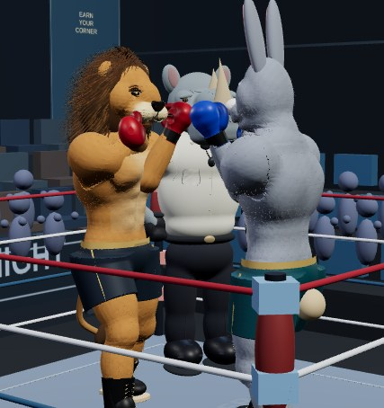
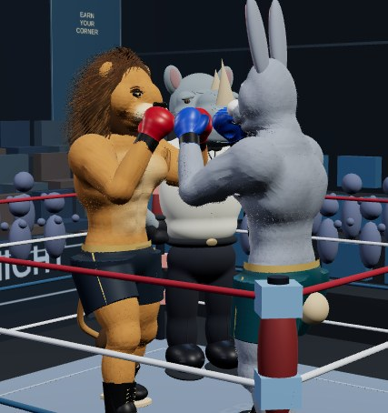
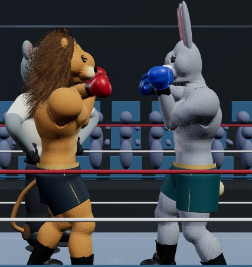
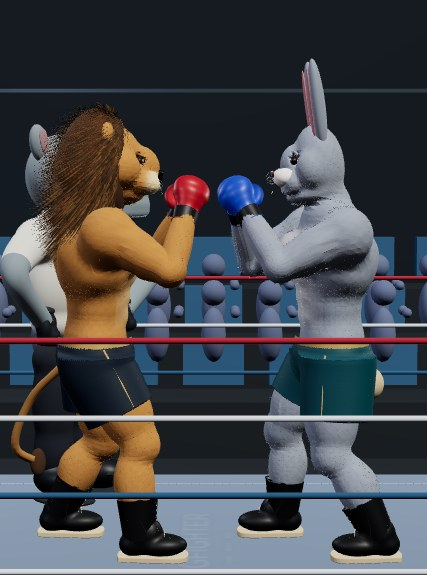
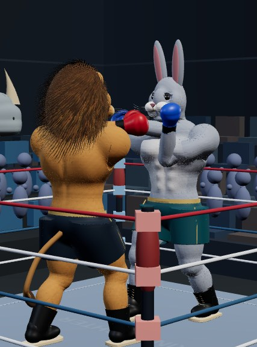
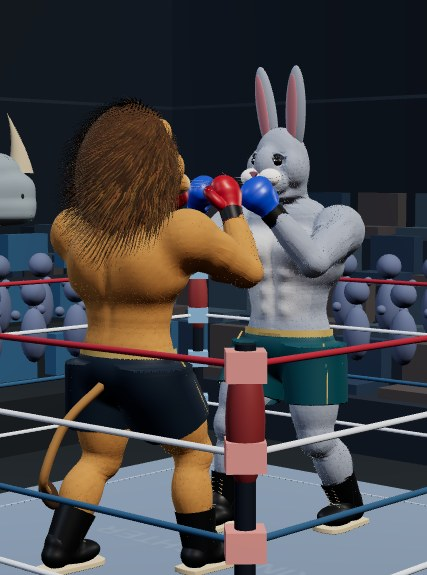
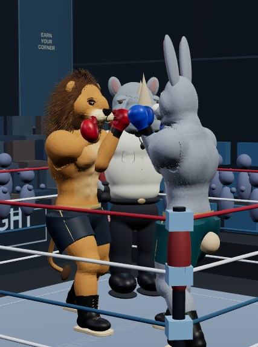
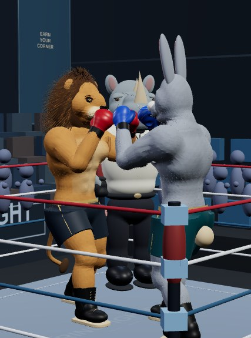
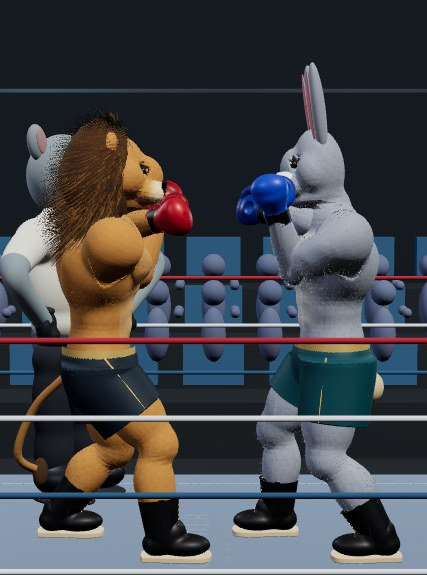
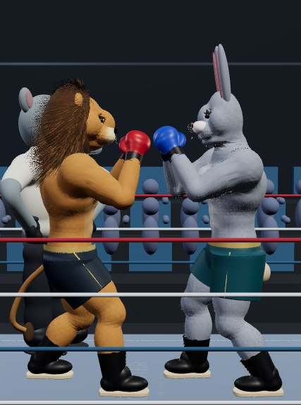
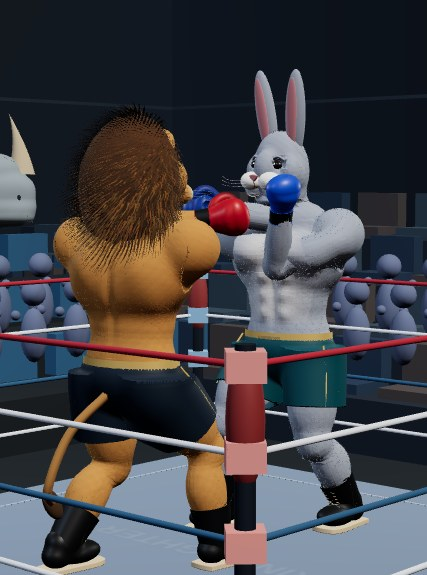
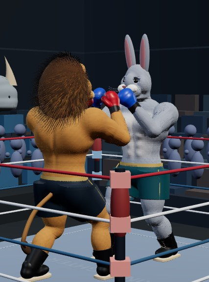
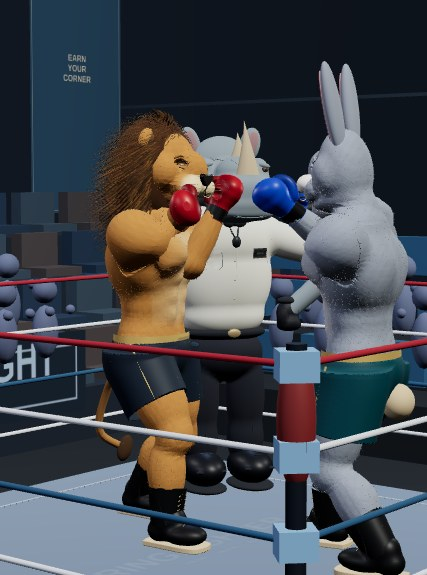
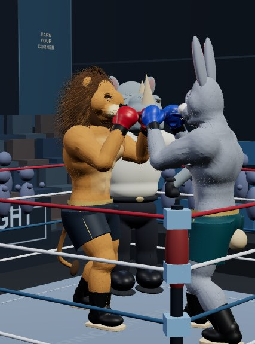
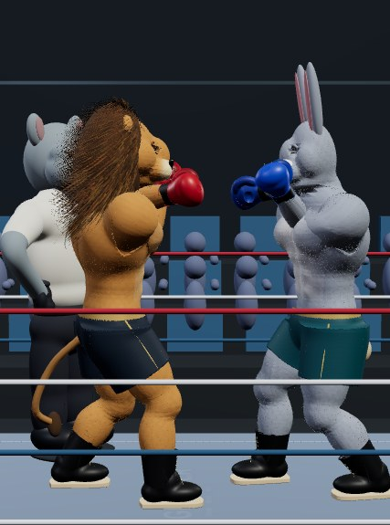
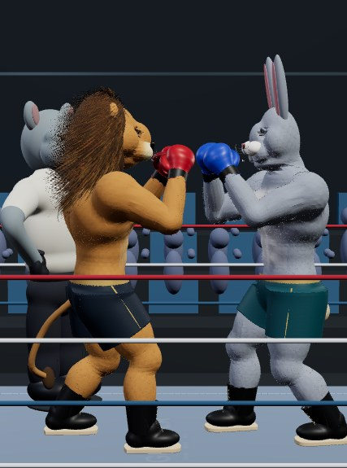
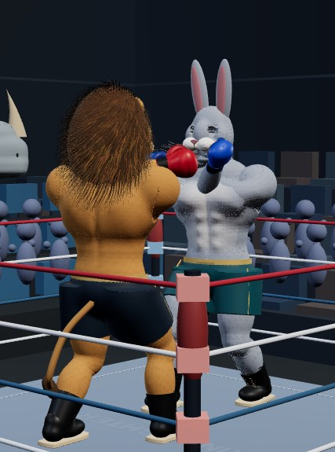
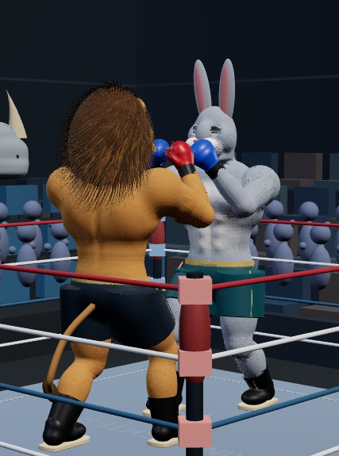
No generated artwork. Browser renders do not establish physical phone performance.